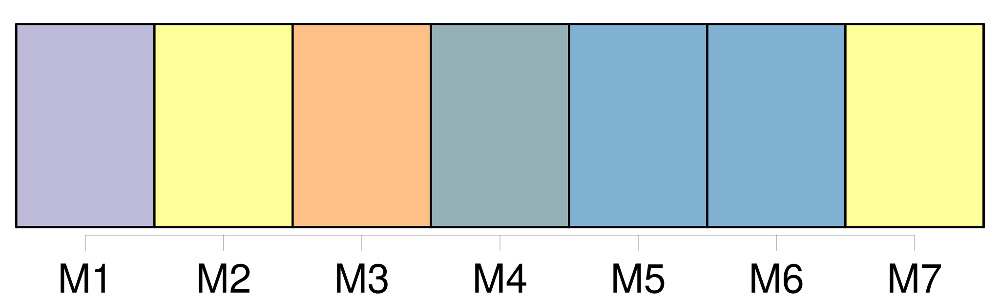
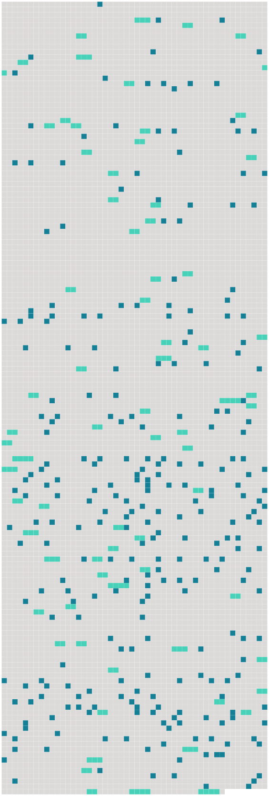

Longueur nb maillons : 345 mentions |
 |
Il s’ enquit des causes de cette affluence, et le monde répondit par deux noms : [9 phrases] Tout à coup des applaudissements à faire crouler la salle accueillirent l’ entrée en scène de [la prima donna] [Elle] s’ avança par coquetterie sur le devant du théâtre, et [salua] le public avec une grâce infinie. Les lumières, l’ enthousiasme de tout un peuple, l’ illusion de la scène, les prestiges d’ une toilette qui, à cette époque, était assez engageante, conspirèrent en faveur de [cette femme] [1 phrases] Il admirait en ce moment la beauté idéale de laquelle il avait jusqu’ alors cherché çà et là les perfections dans la nature, en demandant à un modèle, souvent ignoble, les rondeurs d’ une jambe accomplie ; à tel autre, les contours du sein ; à celui -là, ses blanches épaules ; prenant enfin le cou d’ une jeune fille, et les mains de [cette femme] , et les genoux polis de cet enfant, sans rencontrer jamais sous le ciel froid de Paris les riches et suaves créations de la Grèce antique. [La Zambinella] lui montrait réunies, bien vivantes et délicates, ces exquises proportions de la nature féminine si ardemment désirées, desquelles un sculpteur est, tout à la fois, le juge le plus sévère et le plus passionné. [2 phrases] L’ artiste ne se lassait pas d’ admirer la grâce inimitable avec laquelle les bras étaient attachés au buste, la rondeur prestigieuse du cou, les lignes harmonieusement décrites par les sourcils, par le nez, puis l’ ovale parfait du visage, la pureté de [ses] contours vifs, et l’ effet de cils fournis, recourbés qui terminaient de larges et voluptueuses paupières. [C’] était plus qu’ une femme, [c’] était un chef-d’œuvre!! Il se trouvait dans [cette création inespérée] , de l’ amour à ravir tous les hommes, et des beautés dignes de satisfaire un critique. [1 phrases] Quand [la Zambinella] chanta, ce fut un délire. [2 phrases] Sarrasine voulait s’ élancer sur le théâtre et s’ emparer de [cette femme] [Sa] force, centuplée par une dépression morale impossible à expliquer, puisque ces phénomènes se passent dans une sphère inaccessible à l’ observation humaine, tendait à se projeter avec une violence douloureuse. [2 phrases]
— Être aimé d’ [elle] , ou mourir, tel fut l’ arrêt que Sarrasine porta sur lui -même. [1 phrases] Bien mieux, il n’ existait pas de distance entre lui et [la Zambinella] , il [la] possédait, [ses] yeux, attachés sur [elle] , s’ emparaient d’ [elle] Une puissance presque diabolique lui permettait de sentir le vent de cette voix, de respirer la poudre embaumée dont ces cheveux étaient imprégnés, de voir les méplats de ce visage, d’ y compter les veines bleues qui [en] nuançaient la peau satinée. [10 phrases] En proie à cette première fièvre d’ amour qui tient autant au plaisir qu’ à la douleur, il voulut tromper son impatience et son délire en dessinant [la Zambinella] de mémoire. [1 phrases] Sur telle feuille, [la Zambinella] se trouvait dans cette attitude, calme et froide en apparence, affectionnée par Raphaël, par le Giorgion et par tous les grands peintres. Sur telle autre, [elle] tournait la tête avec finesse en achevant une roulade, et [semblait] s’ écouter [elle -même] Sarrasine crayonna [sa maîtresse] dans toutes les poses : il [la] fit sans voile, assise, debout, couchée, ou chaste ou amoureuse, en réalisant, grâce au délire de ses crayons, toutes les idées capricieuses qui sollicitent notre imagination quand nous pensons fortement à une maîtresse. [1 phrases] Il voyait [la Zambinella] , [lui] parlait, [la] suppliait, épuisait mille années de vie et de bonheur avec [elle] , en [la] plaçant dans toutes les situations imaginables, en essayant, pour ainsi dire, l’ avenir avec [elle] [1 phrases] Puis, comme tous les jeunes gens dont l’ âme est puissante, il s’ exagéra les difficultés de son entreprise, et donna, pour première pâture à sa passion, le bonheur de pouvoir admirer [sa maîtresse] sans obstacles. [2 phrases] Pendant une huitaine de jours, il vécut toute une vie, occupé le matin à pétrir la glaise à l’ aide de laquelle il réussissait à copier [la Zambinella] , malgré les voiles, les jupes, les corsets et les nœuds de rubans qui [la] lui dérobaient. [1 phrases] D’ abord il se familiarisa graduellement avec les émotions trop vives que lui donnait le chant de [sa maîtresse] ; puis il apprivoisa [ses] yeux à [la] voir, et finit par [la] contempler sans redouter l’ explosion de la sourde rage par laquelle il avait été animé le premier jour. [3 phrases]
En commençant à entrevoir qu’ il faudrait bientôt agir, s’ intriguer, demander où demeurait [la Zambinella] , savoir si [elle] avait une mère, un oncle, un tuteur, une famille ; en songeant enfin aux moyens de [la] voir, de [lui] parler, il sentait son cœur se gonfler si fort à des idées si ambitieuses, qu’ il remettait ces soins au lendemain, heureux de ses souffrances physiques autant que de ses plaisirs intellectuels. [2 phrases] « Depuis quelques jours, repris -je après une pause, Sarrasine était si fidèlement venu s’ installer dans sa loge, et ses regards exprimaient tant d’ amour, que sa passion pour la voix de [Zambinella] aurait été la nouvelle de tout Paris, si cette aventure s’ y fût passée ; mais en Italie, madame, au spectacle, chacun y assiste pour son compte, avec ses passions, avec un intérêt de cœur qui exclut l’ espionnage des lorgnettes. [2 phrases] Il eût été difficile de savoir à quelles extrémités il se serait porté, si [la Zambinella] n’ était pas entrée en scène. [Elle] jeta sur Sarrasine un des coups d’ œil éloquents qui disent souvent beaucoup plus de choses que les femmes ne le veulent. [2 phrases] — Si ce n’ est qu’ un caprice, pensa-t -il en accusant déjà [sa maîtresse] de trop d’ ardeur, [elle] ne connaît pas la domination sous laquelle [elle] va tomber. [Son] caprice durera, j’ espère, autant que ma vie. [5 phrases] Il s’ échappa de sa loge, après avoir fait un signe d’ intelligence à [la Zambinella] , [qui] baissa timidement [ses] voluptueuses paupières comme une femme heureuse d’ être enfin comprise. Puis il courut chez lui, afin d’ emprunter à la toilette toutes les séductions qu’ [elle] pourrait lui prêter. [3 phrases]
Le cardinal Cicognara est [son] protecteur, et ne badine pas. Quand un démon aurait mis entre Sarrasine et [la Zambinella] les profondeurs de l’ enfer, en ce moment il eût tout traversé d’ une enjambée. [19 phrases]
Il avait espéré une chambre mal éclairée, [sa maîtresse] auprès d’ un brasier, un jaloux à deux pas, la mort et l’ amour, des confidences échangées à voix basse, cœur à cœur, des baisers périlleux, et les visages si voisins, que les cheveux de [la Zambinella] eussent caressé [son] front chargé de désirs, brûlant de bonheur. [3 phrases] Après avoir reçu les compliments assez affectueux de la plupart des personnes présentes, qu’ il connaissait de vue, il tâcha de s’ approcher de la bergère sur laquelle [la Zambinella] était nonchalamment étendue. [1 phrases] comme son cœur battit quand il aperçut un pied mignon, chaussé de ces mules qui, permettez -moi de le dire, [madame] , donnaient jadis au pied des femmes une expression si coquette, si voluptueuse, que je ne sais pas comment les hommes y pouvaient résister. [4 phrases] — [La Zambinella] , repris -je en souriant, s’ était effrontément croisé les jambes, et [agitait] en badinant celle qui se trouvait dessus, attitude de duchesse, qui allait bien à [son] genre de beauté capricieuse et pleine d’ une certaine mollesse engageante. [Elle] avait quitté [ses] habits de théâtre, et [portait] un corps qui dessinait une taille svelte et que faisaient valoir des paniers et une robe de satin brodée de fleurs bleues. [Sa] poitrine, dont une dentelle dissimulait les trésors par un luxe de coquetterie, étincelait de blancheur. Coiffée à peu près comme se coiffait madame du Barry, [sa] figure, quoique surchargée d’ un large bonnet, n’ en paraissait que plus mignonne, et la poudre [lui] seyait bien. [La] voir ainsi, c’ était [l’] adorer. [Elle] sourit gracieusement au sculpteur.
Sarrasine, tout mécontent de ne pouvoir [lui] parler que devant témoins, s’ assit poliment auprès d’ [elle] , et [l’] entretint de musique en [la] louant sur [son] prodigieux talent ; mais [sa] voix tremblait d’ amour, de crainte et d’ espérance. [6 phrases] Quoique doué d’ une certaine force de caractère, et bien qu’ aucune circonstance ne dût influer sur son amour, il n’ avait peut-être pas encore songé que [Zambinella] était presque une courtisane, et qu’ il ne pouvait pas avoir tout à la fois les jouissances pures qui rendent l’ amour d’ une jeune fille chose si délicieuse, et les emportements fougueux par lesquels une femme de théâtre fait acheter les trésors de sa passion. [2 phrases] Sarrasine et [la Zambinella] se mirent sans cérémonie à côté l’ un de l’ autre. Pendant la moitié du festin, les artistes gardèrent quelque mesure, et le sculpteur put causer avec [la cantatrice] Il [lui] trouva de l’ esprit, de la finesse ; mais [elle] était d’ une ignorance surprenante, et se [montra] faible et superstitieuse. La délicatesse de [ses] organes se reproduisait dans [son] entendement. Quand Vitagliani déboucha la première bouteille de vin de Champagne, Sarrasine lut dans les yeux de [sa voisine] une crainte assez vive de la petite détonation produite par le dégagement du gaz. [3 phrases]
— [Vous] disposerez de ma puissance comme d’ un bouclier! [1 phrases] Sarrasine, trop passionné pour débiter des galanteries à [la belle Italienne] , était, comme tous les amants, tour à tour grave, rieur ou recueilli. Quoiqu’ il parût écouter les convives, il n’ entendait pas un mot de ce qu’ ils disaient, tant il s’ adonnait au plaisir de se trouver près d’ [elle] , de [lui] effleurer la main, de [la] servir. [1 phrases] Malgré l’ éloquence de quelques regards mutuels, il fut étonné de la réserve dans laquelle [la Zambinella] se tint avec lui. [Elle] avait bien commencé la première à lui presser le pied et à l’ agacer avec la malice d’ une femme libre et amoureuse ; mais soudain [elle] s’ était enveloppée dans une modestie de jeune fille, après avoir entendu raconter par Sarrasine un trait qui peignit l’ excessive violence de son caractère. [7 phrases] Au milieu de ce désordre, [la Zambinella] , comme frappée de terreur, resta pensive. [Elle] refusa de boire, [mangea] peut-être un peu trop ; mais la gourmandise est, dit -on, une grâce chez les femmes.
En admirant la pudeur de [sa maîtresse] , Sarrasine fit de sérieuses réflexions pour l’ avenir.
— [Elle] veut sans doute être épousée, se dit -il. [1 phrases] Sa vie entière ne lui semblait pas assez longue pour épuiser [la source de bonheur] [qu’] il trouvait au fond de son âme. [1 phrases] Dans un moment de fougue, il emporta [cette femme] en se sauvant dans une espèce de boudoir qui communiquait au salon, et sur la porte duquel il avait plus d’ une fois tourné les yeux.
[L’ Italienne] était armée d’ un poignard. — Si tu approches, dit [-elle] , [je] serai forcée de te plonger cette arme dans le cœur. [1 phrases] tu [me] mépriserais. [J’] ai conçu trop de respect pour ton caractère pour [me] livrer ainsi.
[Je] ne veux pas déchoir du sentiment que tu [m’] accordes. [3 phrases]
Es [-tu] donc déjà corrompue à ce point que, vieille de cœur, [tu] agirais comme une jeune courtisane, qui aiguise les émotions dont elle fait commerce?
— Mais c’ est aujourd’hui vendredi, répondit [-elle] effrayée de la violence du Français. [1 phrases] [La Zambinella] bondit comme un jeune chevreuil et s’ [élança] dans la salle du festin. Quand Sarrasine y apparut courant après [elle] , il fut accueilli par un rire infernal. Il vit [la Zambinella] évanouie sur un sofa. [Elle] était pâle et comme épuisée par l’ effort extraordinaire qu’ elle venait de faire.
Quoique Sarrasine sût peu d’ italien, il entendit [sa maîtresse] disant à voix basse à Vitagliani : [2 phrases] Il resta d’ abord immobile ; puis il retrouva la parole, s’ assit auprès de [sa maîtresse] et protesta de son respect. Il trouva la force de donner le change à sa passion en disant à [cette femme] les discours les plus exaltés ; et, pour peindre son amour, il déploya les trésors de cette éloquence magique, officieux interprète que les femmes refusent rarement de croire. [3 phrases] Sarrasine eut le bonheur de conduire [la Zambinella] dans un phaéton. [2 phrases]
[La compagne du sculpteur] était la seule qui parût abattue. — Êtes [-vous] malade?? [lui] dit Sarrasine.
Aimeriez [-vous] mieux rentrer chez [vous] ? — [Je] ne suis pas assez forte pour supporter tous ces excès, répondit [-elle] [J’] ai besoin de grands ménagements ; mais, près de vous, [je] me sens si bien!!
Sans vous, [je] ne serais pas restée à ce souper ; une nuit passée [me] fait perdre toute [ma] fraîcheur. — [Vous] êtes si délicate!!
reprit Sarrasine en contemplant les traits mignons de [cette charmante créature]
— Les orgies [m’] abîment la voix.
— Maintenant que nous sommes seuls, s’ écria l’ artiste, et que [vous] n’ avez plus à craindre l’ effervescence de ma passion, dites -moi que [vous] m’ aimez. [1 phrases] répliqua-t [-elle] , à quoi bon?? [Je] vous ai semblé jolie. [2 phrases]
vous ne [m’] aimeriez pas comme [je] voudrais être aimée. [2 phrases] [J’] abhorre les hommes encore plus peut-être que [je] ne hais les femmes. [J’] ai besoin de me réfugier dans l’ amitié. Le monde est désert pour [moi] [Je] suis une créature maudite, condamnée à comprendre le bonheur, à le sentir, à le désirer, et, comme tant d’ autres, forcée à le voir [me] fuir à toute heure. Souvenez -vous, seigneur, que [je] ne vous aurai pas trompé. [Je] vous défends de [m’] aimer. [Je] puis être un ami dévoué pour vous, car [j’] admire votre force et votre caractère. [J’] ai besoin d’ un frère, d’ un protecteur.
Soyez tout cela pour [moi] , mais rien de plus. — Ne pas [vous] aimer!!
s’ écria Sarrasine ; mais, [chère ange] , [tu] es ma vie, mon bonheur!
— Si [je] disais un mot vous [me] repousseriez avec horreur. — [Coquette] !! [1 phrases]
Dis -moi que [tu] me coûteras l’ avenir, que dans deux mois je mourrai, que je serai damné pour [t’] avoir seulement embrassée.
Il [l’] embrassa malgré les efforts que fit [la Zambinella] pour se soustraire à ce baiser passionné. — Dis -moi que [tu] es un démon, qu’ il [te] faut ma fortune, mon nom, toute ma célébrité!! Veux [-tu] que je ne sois pas sculpteur?? [1 phrases] — Si [je] n’ étais pas une femme??
demanda timidement [la Zambinella] d’ une voix argentine et douce. [2 phrases] Crois [-tu] pouvoir tromper l’ œil d’ un artiste?? N’ ai -je pas, depuis dix jours, dévoré, scruté, admiré [tes] perfections?? [2 phrases]
[tu] veux des compliments!
[Elle] sourit tristement, et [dit] en murmurant : [Elle] leva les yeux au ciel.
En ce moment [son] regard eut je ne sais quelle expression d’ horreur si puissante, si vive, que Sarrasine en tressaillit. — Seigneur Français, reprit [-elle] , oubliez à jamais un instant de folie. [Je] vous estime ; mais, quant à de l’ amour, ne [m’] en demandez pas ; ce sentiment est étouffé dans [mon] cœur. [Je] n’ ai pas de cœur!! s’ écria-t [-elle] en pleurant. Le théâtre sur lequel vous [m’] avez vue, ces applaudissements, cette musique, cette gloire, à laquelle on [m’] a condamnée, voilà [ma] vie, [je] n’ en ai pas d’ autre.
Dans quelques heures vous ne [me] verrez plus des mêmes yeux, [la femme] [que] vous aimez sera morte. [2 phrases] Il ne pouvait que regarder [cette femme extraordinaire] avec des yeux enflammés qui brûlaient. Cette voix empreinte de faiblesse, l’ attitude, les manières et les gestes de [Zambinella] , marqués de tristesse, de mélancolie et de découragement, réveillaient dans son âme toutes les richesses de la passion. [2 phrases]
Quand l’ artiste tendit les bras à [sa maîtresse] pour [l’] aider à descendre, il [la] sentit toute frissonnante. — Qu’ avez [-vous] ??
[Vous] me feriez mourir, s’ écria-t -il en [la] voyant pâlir, si [vous] aviez la moindre douleur dont je fusse la cause même innocente. [1 phrases] dit [-elle] en montrant une couleuvre qui se glissait le long d’ un fossé.
[J’] ai peur de ces odieuses bêtes. [2 phrases]
reprit [la Zambinella] en contemplant avec un effroi visible le reptile mort. [1 phrases]
bien, dit l’ artiste en souriant, oserez [-vous] bien prétendre que [vous] n’ êtes pas femme? [1 phrases] Cette matinée s’ écoula trop vite pour l’ amoureux sculpteur, mais elle fut remplie par une foule d’ incidents qui lui dévoilèrent la coquetterie, la faiblesse, la mignardise de [cette âme molle] et sans énergie. [C’] était [la femme] avec [ses] peurs soudaines, [ses] caprices sans raison, [ses] troubles instinctifs, [ses] audaces sans cause, [ses] bravades et [sa] délicieuse finesse de sentiment. [2 phrases] En cet instant critique, Sarrasine s’ aperçut à la pâleur de [la Zambinella] qu’ [elle] n’ avait plus assez de force pour marcher ; il [la] prit dans ses bras et [la] porta, pendant quelque temps, en courant.
Quand il se fut rapproché d’ une vigne voisine, il mit [sa maîtresse] à terre.
— Expliquez -moi, [lui] dit -il, comment cette extrême faiblesse qui, chez toute autre femme, serait hideuse, me déplairait, et dont la moindre preuve suffirait presque pour éteindre mon amour, en [vous] me plaît, me charme? [1 phrases] combien je [vous] aime!! [1 phrases] Tous [vos] défauts, [vos] terreurs, [vos] petitesses ajoutent je ne sais quelle grâce à [votre] âme. [1 phrases] Ô [frêle et douce créature] !! comment peux [-tu] être autrement?? [1 phrases] — [Je] ne puis, dit [-elle] , vous donner aucun espoir. Cessez de [me] parler ainsi, car l’ on se moquerait de vous. Il [m’] est impossible de vous interdire l’ entrée du théâtre ; mais si vous [m’] aimez ou si vous êtes sage, vous n’ y viendrez plus.
Ecoutez, monsieur, dit [-elle] d’ une voix grave. [1 phrases] tais [-toi] , dit l’ artiste enivré. [1 phrases] [La Zambinella] resta dans une attitude gracieuse et modeste ; mais [elle] se tut, comme si une pensée terrible [lui] eût révélé quelque malheur. Quand il fallut revenir à Rome, [elle] monta dans une berline à quatre places, en ordonnant au sculpteur, d’ un air impérieusement cruel, d’ y retourner seul avec le phaéton. Pendant le chemin, Sarrasine résolut d’ enlever [la Zambinella] [1 phrases]
A la nuit tombante, au moment où il sortit pour aller demander à quelques personnes où était situé le palais habité par [sa maîtresse] , il rencontra l’ un de ses camarades sur le seuil de la porte. [1 phrases]
Il donne un concert magnifique, et quand tu sauras que [Zambinella] y sera … — [Zambinella] !!
s’ écria Sarrasine en délire à ce nom, j’ [en] suis fou! [6 phrases]
Le palais de l’ ambassadeur étant plein de monde, ce ne fut pas sans peine que le sculpteur, inconnu à tous les assistants, parvint au salon où dans ce moment [Zambinella] chantait.
— C’ est sans doute par égard pour les cardinaux, les évêques et les abbés qui sont ici, demanda Sarrasine, qu’ [elle] est habillée en homme, qu’ [elle] a une bourse derrière la tête, les cheveux crêpés et une épée au côté? — [Elle] !! Qui [elle] ?? [1 phrases]
— [La Zambinella] — [La Zambinella] ?? [5 phrases] C’ est moi, monsieur, qui ai doté [Zambinella] de [sa] voix. J’ ai tout payé à [ce drôle -là] , même [son] maître à chanter. [7 phrases] Son regard flamboyant eut une sorte d’ influence magnétique sur [Zambinella] , car [le musico] finit par détourner subitement la vue vers Sarrasine, et alors [sa] voix céleste s’ altéra. [2 phrases] Le cardinal Cicognara, qui avait épié du coin de l’ œil la direction que prit le regard de [son protégé] , aperçut alors le Français ; il se pencha vers un de ses aides-de-camp ecclésiastiques, et parut demander le nom du sculpteur. [1 phrases] Cependant [Zambinella] , s’ étant remis, recommença le morceau qu’ [il] avait interrompu si capricieusement ; mais [il] l’ exécuta mal, et [refusa] , malgré toutes les instances qui [lui] furent faites, de chanter autre chose.
Ce fut la première fois qu’ [il] exerça cette tyrannie capricieuse qui, plus tard, ne [le] rendit pas moins célèbre que [son] talent et [son] immense fortune, due, dit -on, non moins à [sa] voix qu’ à [sa] beauté. — [C’] est une femme, dit Sarrasine en se croyant seul. [3 phrases] Quand [Zambinella] se fut assuré du départ de Sarrasine, [il] parut recouvrer quelque tranquillité. Vers minuit, après avoir erré dans les salons, en homme qui cherche un ennemi, [le musico] quitta l’ assemblée. Au moment où [il] franchissait la porte du palais, [il] fut adroitement saisi par des hommes qui [le] bâillonnèrent avec un mouchoir et [le] mirent dans la voiture louée par Sarrasine. Glacé d’ horreur, [Zambinella] resta dans un coin sans oser faire un mouvement. [Il] voyait devant [lui] la figure terrible de l’ artiste qui gardait un silence de mort. [1 phrases] [Zambinella] , enlevé par Sarrasine, se trouva bientôt dans un atelier sombre et nu. [Le chanteur] , à moitié mort, demeura sur une chaise, sans oser regarder une statue de femme, dans laquelle [il] reconnut [ses] traits. [Il] ne proféra pas une parole, mais [ses] dents claquaient. [Il] était transi de peur. [1 phrases]
Tout à coup il s’ arrêta devant [Zambinella] [1 phrases] [Tu] es [une femme] ?? [1 phrases]
[Zambinella] tomba sur [ses] genoux, et ne [répondit] qu’ en baissant la tête. [1 phrases]
[tu] es [une femme] , s’ écria l’ artiste en délire ; car même un …
[Il] n’ acheva pas. [2 phrases] ne [me] tuez pas, s’ écria [Zambinella] fondant en larmes.
[Je] n’ ai consenti à vous tromper que pour plaire à [mes] camarades, qui voulaient rire. [3 phrases]
[Tu] as osé [te] jouer d’ une passion d’ homme, [toi] ? [2 phrases]
répliqua [Zambinella] — Je devrais [te] faire mourir!! [1 phrases] Mais, reprit -il avec un dédain froid, en fouillant [ton] être avec un poignard, y trouverais -je un sentiment à éteindre, une vengeance à satisfaire?? [Tu] n’ es rien. Homme ou femme, je [te] tuerais!! [4 phrases]
Puis se tournant vers [Zambinella] : As [-tu] des sœurs qui [te] ressemblent?? [2 phrases] Mais non, [tu] vivras. [Te] laisser la vie n’ est -ce pas [te] vouer à quelque chose de pire que la mort?? [1 phrases] [Ta] main débile a renversé mon bonheur. Quelle espérance puis -je [te] ravir pour toutes celles que [tu] as flétries?? [Tu] m’ as ravalé jusqu’ à [toi] [1 phrases] sont désormais des mois vides de sens pour moi, comme pour [toi]
Sans cesse je penserai à [cette femme imaginaire] en voyant une femme réelle. [2 phrases] [Monstre] !!
[toi] [qui] ne peux donner la vie à rien, [tu] m’ as dépeuplé la terre de toutes ses femmes. Sarrasine s’ assit en face [du chanteur épouvanté]
Deux grosses larmes sortirent de ses yeux secs, roulèrent le long de [ses] joues mâles et tombèrent à terre : deux larmes de rage, deux larmes âcres et brûlantes. [3 phrases] Il crut avoir détruit ce monument de sa folie, et alors il reprit son épée et la brandit pour tuer [le chanteur] [Zambinella] jeta des cris perçants. [3 phrases]
Ces sombres émissaires apprirent à [Zambinella] l’ inquiétude de [son] protecteur, qui attendait à la porte dans une voiture fermée, afin de pouvoir [l’] emmener aussitôt qu’ [il] serait délivré. [1 phrases] — Madame, le cardinal Cicognara se rendit maître de la statue de [Zambinella] et la fit exécuter en marbre, elle est aujourd’hui dans le musée Albani. [1 phrases]
Le portrait qui vous a montré [Zambinella] à vingt ans, un instant après [l’] avoir vu centenaire, a servi plus tard pour l’ Endymion de Girodet, vous avez pu en reconnaître [le type] dans l’ Adonis.
— Mais [ce ou cette Zambinella] ? — Ne saurait être, madame, que [le grand-oncle de Marianina] |
 |
Il est possible de télécharger la ressource sur la page Ortolang |
Si vous avez des questions ou vous voyez des erreurs, merci d'envoyer un mail à silvia.federzoni89@gmail.com |